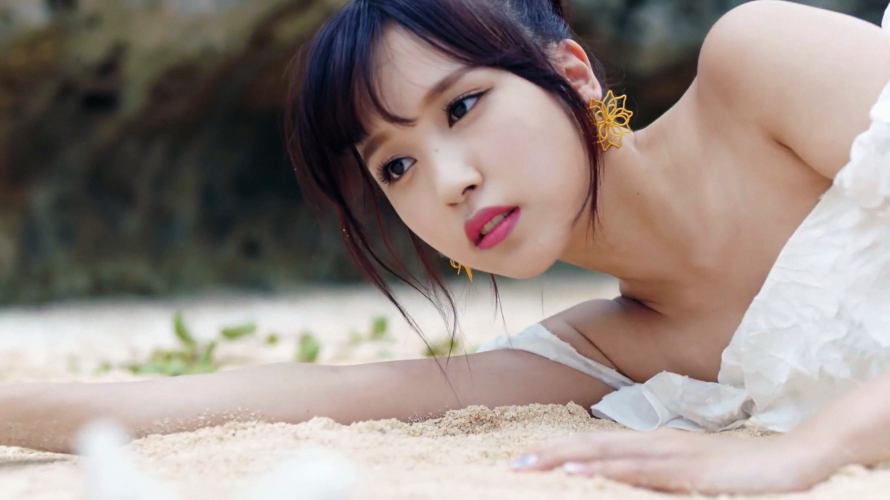

Biodata Umum
Nama panggung: Mina
Nama asli: Myoui Mina
Tempat lahir: San Antonio, Texas, Amerika
Tanggal lahir: 24 Maret 1997
Golongan darah: A
Mina merupakan salah satu anggota girl group populer asal Korea Selatan, TWICE, yang memiliki kewarganegaraan Jepang. Ia dikenal sebagai main dancer di grupnya. Tentu hal tersebut tak mengherankan jika menilik latar belakang Mina yang merupakan seorang balerina.
Dengan bakat luar biasa yang dimiliki, ia menjadi salah satu anggota dengan jaringan fanbase terluas. Melalui hal tersebut, rasa ingin tahu publik terhadapnya kian meningkat.
Nama panggung: Mina
Nama asli: Myoui Mina
Tempat lahir: San Antonio, Texas, Amerika
Tanggal lahir: 24 Maret 1997
Golongan darah: A

Pada tahun 2014, Mina mendapatkan tawaran untuk mengikuti audisi dari seorang pencari bakat JYP Entertainment di Osaka, Jepang. Menariknya, kala itu Mina sedang menikmati waktu belanjanya bersama sang ibu. Ia memutuskan menerima tawaran itu dengan menjajal JYP Audition in Japan 2014. Melalui audisi tersebut, Mina dinyatakan lolos dan berkesempatan untuk menjadi siswa trainee di JYP Entertainment.
Pada tahun 2015, JYP Entertainment melakukan kerja sama dengan Mnet untuk menyelenggarakan acara survival yang bertajuk Sixteen. Dalam acara tersebut, 16 trainee yang bernaung di agensi tersebut memperebutkan posisi teratas untuk debut sebagai anggota TWICE. Di episode terakhir, Mina berhasil menduduki posisi keenam, sehingga ia masuk ke dalam line up debut bersama delapan trainee lainnya.
Menjadi anggota TWICE dengan masa training paling singkat, Mina tetap bekerja keras untuk menunjukkan kualitasnya. Hal tersebut ia buktikan melalui kepercayaan yang diterimanya untuk mengisi posisi penari utama di TWICE. Akhirnya, Mina secara resmi memulai debutnya bersama TWICE dengan merilis mini album pertama yang bertajuk The Story Begins pada 20 Oktober 2015.
Selama acara survival berlangsung, para trainee telah banyak mendapatkan sorotan. Tak mengherankan jika TWICE langsung mendulang kesuksesan ketika resmi debut. Bahkan, ketiga anggota yang berasal dari Jepang, salah satunya Mina, disebut-sebut telah meningkatkan hubungan baik antara kedua negara, Korea Selatan dan Jepang. Pasalnya, ia memiliki image yang baik di Negeri Sakura tersebut.
Namun, pada 11 Juli 2019, Mina diharuskan untuk beristirahat sejenak dari aktivitasnya. JYP Entertainment mengumumkan jika ia sedang mengalami gangguan kecemasan ekstrem. Mina membutuhkan waktu selama hampir 7 bulan vakum untuk memulihkan kesehatannya. Hingga Februari 2020, akhirnya pihak agensi mengonfirmasi jika Mina mulai bersiap untuk tampil kembali sebagai anggota TWICE.
Karier Mina terus berlanjut, ia secara aktif menjalankan aktivitasnya sebagai idol. Selain itu, berbagai tawaran pemotretan hingga ambassador dari berbagai brand terkemuka pun diterima oleh Mina bersama grupnya. Sebagai contoh, seperti majalah Allure Korea, Nike Air Max, hingga Pocari Sweat. Bahkan, baru-baru ini perusahaan lokal Indonesia juga tak ketinggalan ikut menggaet TWICE sebagai bintangi iklannya, nih, seperti Tokopedia dan Scarlett Whitening.
Sebagai Penulis Lagu:
Bersama grupnya, TWICE, Mina sukses menorehkan berbagai prestasi yang membanggakan. Berikut ini daftarnya: